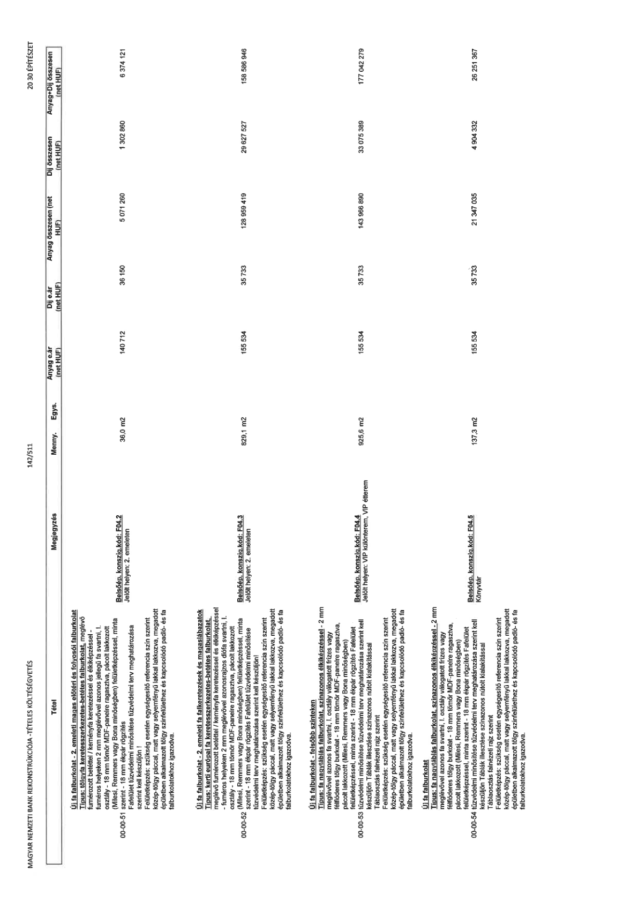

| Tétel | Megjegyzés | Menny. | Egys. | Anyag e.ár (net HUF) | Díj e.ár (net HUF) | Anyag összesen (net HUF) | Díj összesen (net HUF) | Anyag+Díj összesen (net HUF) |
|---|---|---|---|---|---|---|---|---|
| 00-00-51 Új fa falburkolat - 2. emeleti magas előtéri és folyosói falburkolat Típus: tölgyfa keretszerkezetes-betétes falburkolat, meglévő furnérozott betéttel / keményfa keretezéssel és élkiképzéssel - furnéros helyeken 2 mm jellegűvel azonos jellegű fa svarni, I. osztályú - 18 mm tömör MDF-panelre ragasztva, pácolt lakkozott (Milesi, Remmers vagy Bona minőségben) felületképzéssel, minta szerint. - 18 mm ékpár rögzítés Falfelület tűzvédelmi minősítése tűzvédelmi terv meghatározása szerint kell készüljön! Felületképzés: szükség esetén egységesítő referencia szín szerint közép-tölgy páccal, matt vagy selyemfényű lakkal lakkozva, megadott épületben alkalmazott tölgy színfelülethez és kapcsolódó padló- és fa falburkolatokhoz igazodva. | Belsőép. konszig. kód: F04.2 Jelölt helyen: 2. emeleten | 36,0 | m2 | 140 712 | 36 150 | 5 071 260 | 1 302 860 | 6 374 121 |
| 00-00-52 Új fa falburkolat - 2. emeleti fa falkeretezések és magaslábazatok Típus: kerti európai fa keretszerkezetes-betétes falburkolat, meglévő furnérozott betéttel / keményfa keretezéssel és élkiképzéssel - furnéros helyeken 2 mm jellegűvel azonosrajzos diófa svarni, I. osztályú - 18 mm tömör MDF-panelre ragasztva, pácolt lakkozott (Milesi, Remmers vagy Bona minőségben) felületképzéssel, minta szerint. - 18 mm ékpár rögzítés Falfelület tűzvédelmi minősítése tűzvédelmi terv meghatározása szerint kell készüljön! Felületképzés: szükség esetén egységesítő referencia szín szerint közép-tölgy páccal, matt vagy selyemfényű lakkal lakkozva, megadott épületben alkalmazott tölgy színfelülethez és kapcsolódó padló- és fa falburkolatokhoz igazodva. | Belsőép. konszig. kód: F04.3 Jelölt helyen: 2. emeleten | 829,1 | m2 | 155 534 | 35 733 | 128 959 419 | 29 627 527 | 158 586 946 |
| 00-00-53 Új fa falburkolat - felsőbb szinteken Típus: fa nagytáblás falburkolat, színazonos élkiképzéssel - 2 mm meglévővel azonos fa svarni, I. osztályú válogatott frízes vagy féliőderes tölgy burkolat - 18 mm tömör MDF-panelre ragasztva, pácolt lakkozott (Milesi, Remmers vagy Bona minőségben) felületképzéssel, minta szerint - 18 mm ékpár rögzítés Falfelület tűzvédelmi minősítése tűzvédelmi terv meghatározása szerint kell készüljön Táblák illesztése színazonos nútolt kialakítással Felületképzés: szükség esetén egységesítő referencia szín szerint közép-tölgy páccal, matt vagy selyemfényű lakkal lakkozva, megadott épületben alkalmazott tölgy színfelülethez és kapcsolódó padló- és fa falburkolatokhoz igazodva. | Belsőép. konszig. kód: F04.4 Jelölt helyen: VIP különterem, VIP étterem | 925,6 | m2 | 155 534 | 35 733 | 143 966 890 | 33 075 389 | 177 042 279 |
| 00-00-54 Új fa falburkolat Típus: fa nagytáblás falburkolat, színazonos élkiképzéssel - 2 mm meglévővel azonos fa svarni, I. osztályú válogatott frízes vagy féliőderes tölgy burkolat - 18 mm tömör MDF-panelre ragasztva, pácolt lakkozott (Milesi, Remmers vagy Bona minőségben) felületképzéssel, minta szerint - 18 mm ékpár rögzítés Falfelület tűzvédelmi minősítése tűzvédelmi terv meghatározása szerint kell készüljön Táblák illesztése színazonos nútolt kialakítással Felületképzés: szükség esetén egységesítő referencia szín szerint közép-tölgy páccal, matt vagy selyemfényű lakkal lakkozva, megadott épületben alkalmazott tölgy színfelülethez és kapcsolódó padló- és fa falburkolatokhoz igazodva. | Belsőép. konszig. kód: F04.5 Könyvtár | 137,3 | m2 | 155 534 | 35 733 | 21 347 035 | 4 904 332 | 26 251 367 |
